同类信息应同组呈现；不同类信息应保持清晰边界，避免混淆。
统一跨品类、跨显示载体的信息架构、交互逻辑与页面布局规则，保障界面信息清晰、操作顺畅、布局聚焦，建立一致的品牌交互体验。
通过清晰分组、适度层级和完整导航，帮助用户理解信息并完成任务。

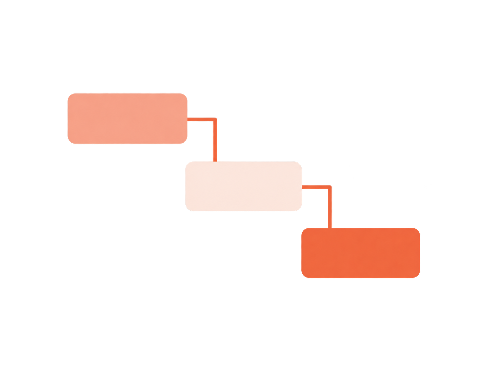
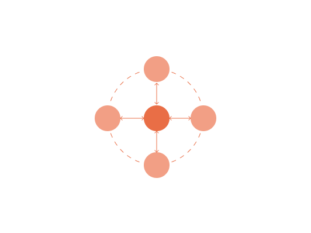
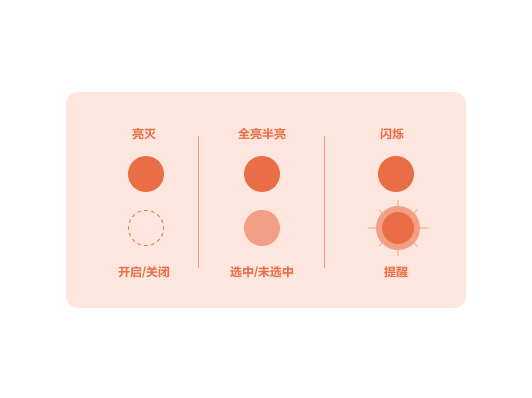
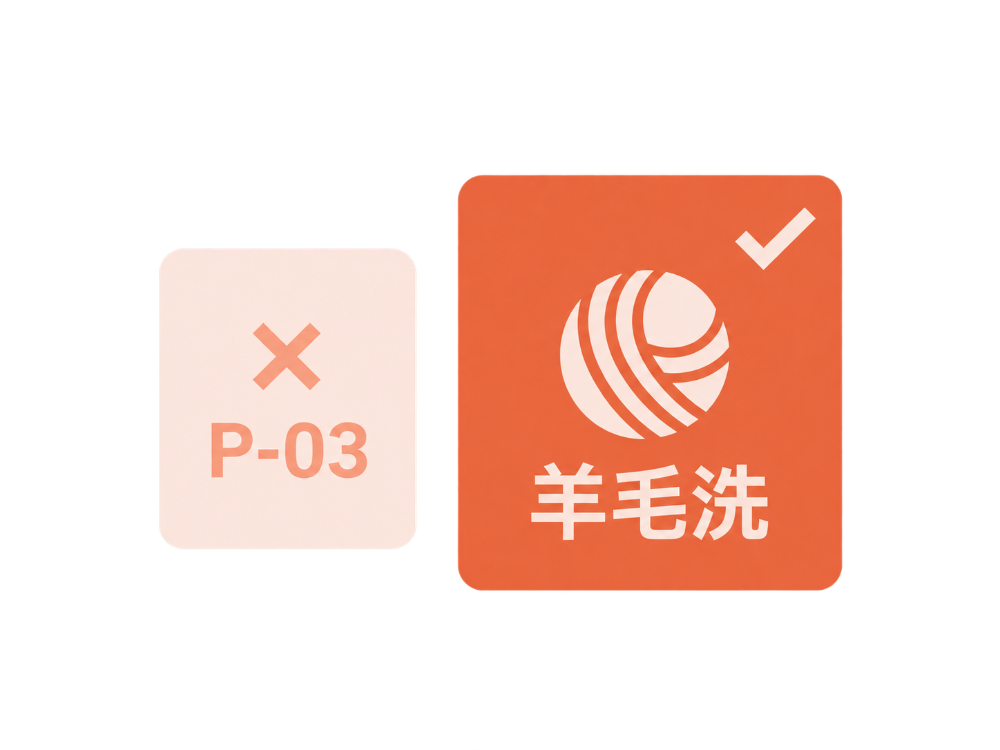
让任务路径顺畅、操作与反馈对应，保持交互方式和状态表达的一致性。
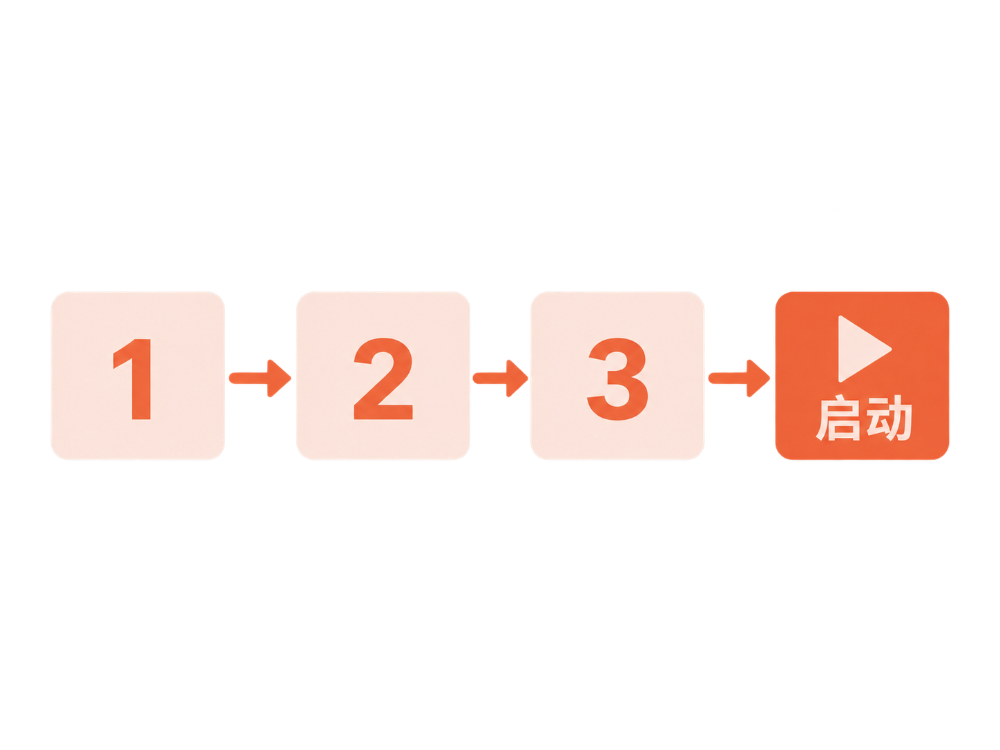
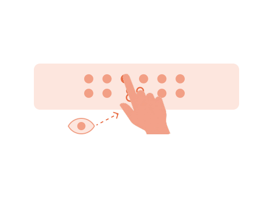
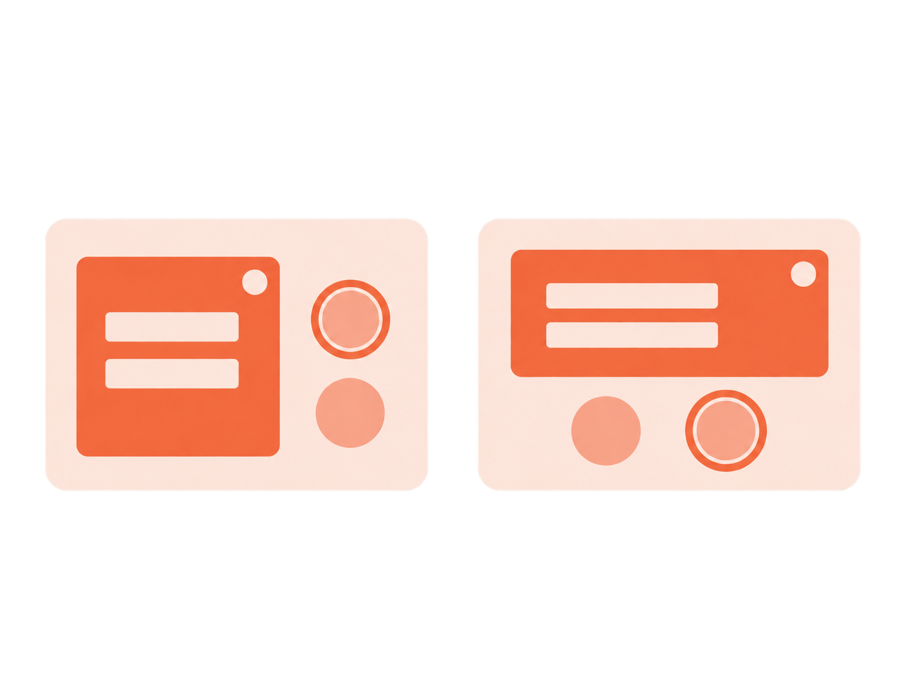
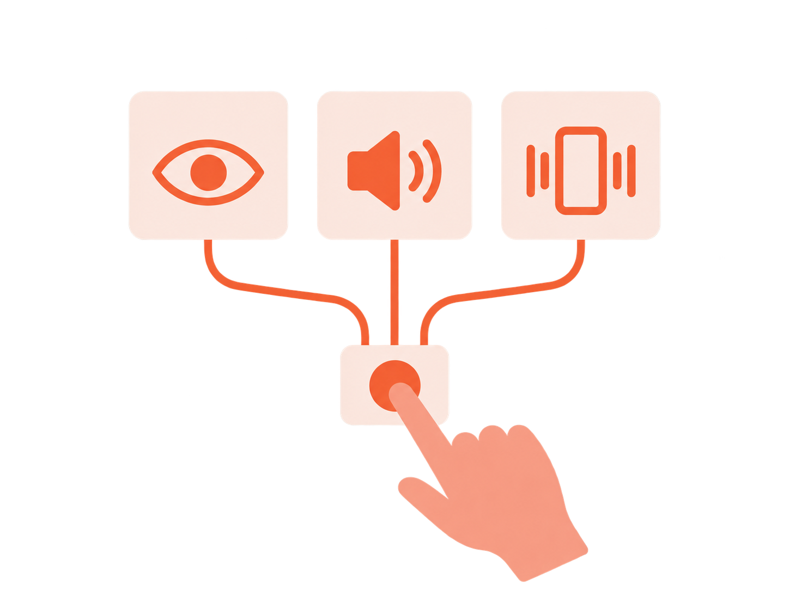
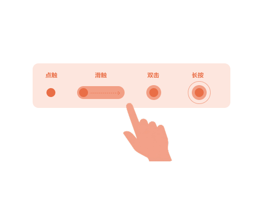
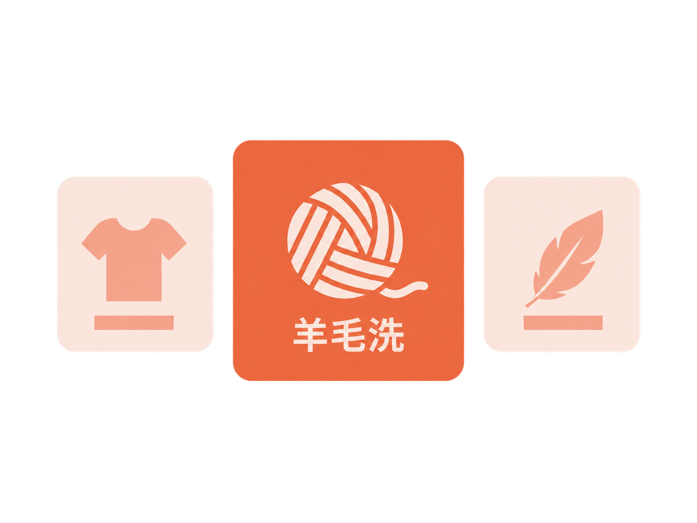
让核心信息与常用操作形成清晰焦点，并使显示位置与操作位置相互对应。
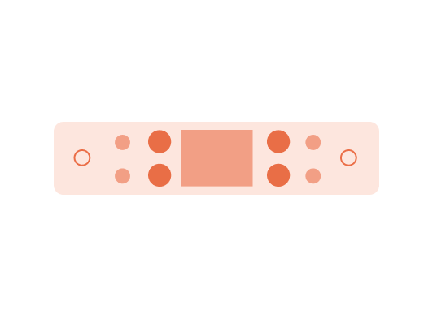
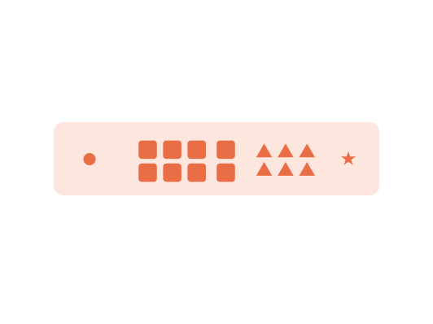
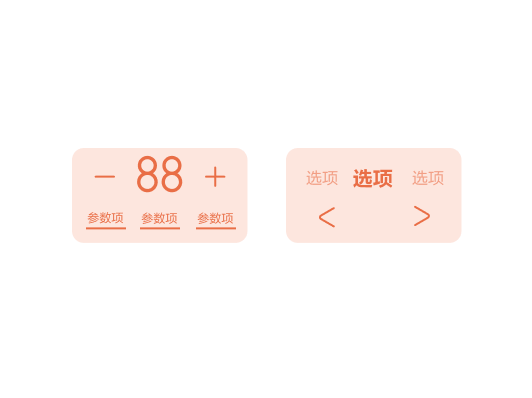
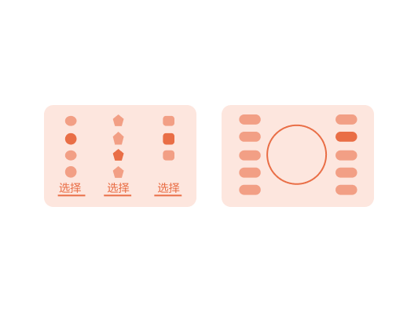
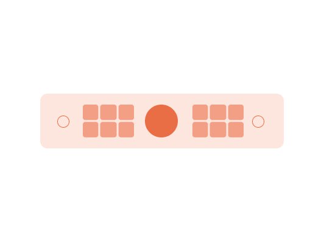
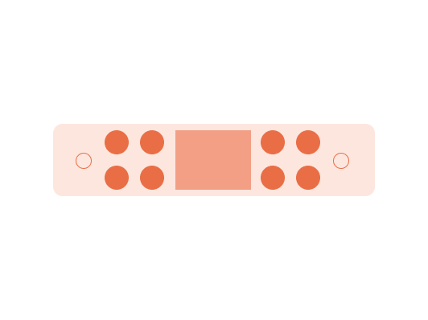
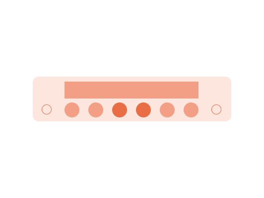